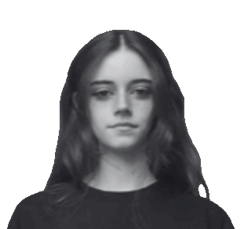
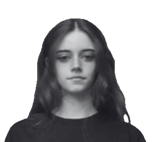

À propos

Production
Contact
 


Je m'appelle Elyse Spada et je suis passionnée par l’image et la communication, toujours à la recherche de nouvelles idées et expériences créatives.
Après un baccalauréat HLP et Audiovisuel au lycée Bristol à Cannes, j’ai poursuivi des études en Lettres Modernes à la Sorbonne, avant de me spécialiser en BTS Communication à l’ISIFA Plus Values, en recherche d'alternance.
Je maîtrise les outils essentiels de la création visuelle et de la communication : Photoshop, Illustrator, After Effects, InDesign, que j’utilise pour concevoir des projets innovants, alliant stratégie et créativité.


Ce visuel s’inscrit dans une esthétique sombre et percutante, pensée comme une affiche à fort impact visuel. L’élément central, la chouette blanche, fait référence à la cover de l’album LA CHOUETTE, mais j’y ai ajouté ma touche personnelle : un regard rouge, inquiétant, qui introduit une dimension sombre et légèrement horrifique. La cible placée sur son front vient renforcer la tension et rompre le mouvement naturel des ailes. Le choix du contraste marqué entre le blanc éclatant de l’animal et les touches de rouge vif attire immédiatement l’œil et installe une atmosphère dérangeante.
- - -
Pour le titre « 34Murphy », j’ai opté pour une typographie élégante et fluide afin de contrebalancer la dureté des éléments graphiques, créant ainsi un équilibre subtil entre brutalité et raffinement. L’inscription « La Chouette » en arrière-plan rappelle l’album et ancre le visuel dans son univers d’inspiration.
J’imagine la plupart de mes visuels comme des affiches que l’on pourrait exposer dans un espace personnel, comme une chambre. Pour celui-ci, je me suis inspirée de la cover de l’album JAAFAR, notamment par l’utilisation des chaînes qui encerclent le sujet, symbole de tension et d’emprisonnement.
- - -
J’affectionne les ambiances sombres, avec un aspect volontairement « brut » et presque « sale », comme en témoignent les bordures usées de l’image. Ce choix esthétique correspond à l’univers musical de l’artiste, souvent marqué par une intensité dramatique et une certaine rugosité.
- - -
Pour le nom, j’ai choisi de modifier la typographie de la première lettre afin de la faire ressortir sans rompre l’équilibre général du visuel. Cette subtilité permet d’attirer l’œil tout en conservant une harmonie graphique.
Pour ce visuel, je me suis inspiré des magazines des années 2000 à 2010, en reprenant leurs codes graphiques : contours blancs très lumineux et grain marqué sur l’image. Ces éléments apportent un aspect rétro tout en donnant de la force au sujet principal.
- - -
L’élément central, le chien, fait référence à celui présent dans le clip du titre « Khali il sait ». Sa posture agressive et la chaîne qui le retient traduisent une tension entre domination et contrôle, renforçant l’idée de puissance contenue. Ce choix visuel crée un contraste fort avec le fond doux composé de ciel et de nuages, qui évoque la liberté et la sérénité, en opposition à la violence et à l’énergie brute du chien.
- - -
Le titre en rouge, avec une typographie élégante et cursive, apporte une touche raffinée qui contrebalance la brutalité de l’image, tout en conservant une esthétique percutante. Les mentions « 2024 » et « SEPTEMBRE » ainsi que le texte en bas renforcent l’effet magazine et donnent au visuel une dimension narrative.
Pour ce visuel, j’ai voulu intégrer des éléments inspirés du cyberciglisme, un mouvement qui s’inscrit parfaitement dans une esthétique mystérieuse et inquiétante, créant ainsi une atmosphère immersive. La forêt sombre et brumeuse sert de décor principal, évoquant un lieu isolé et froid, en accord avec le titre « Là où il fait froid ».
- - -
Les yeux disséminés sur les troncs d’arbres sont ma touche personnelle : ils introduisent une dimension étrange et presque surnaturelle, comme si la nature observait silencieusement. Ce détail renforce le sentiment d’oppression et de paranoïa, invitant le spectateur à s’interroger sur ce qui est réel ou imaginaire. Cette intrusion visuelle donne plus de poids au titre et accentue la tension dramatique.
- - -
Les ornements graphiques et la typographie gothique viennent compléter l’univers visuel, en apportant une esthétique sombre et raffinée. L’ensemble vise à plonger le spectateur dans un décor à la fois beau et dérangeant, où la nature devient un personnage vivant et inquiétant.
Ce visuel reprend les codes graphiques emblématiques des jaquettes de jeux vidéo, en particulier celles de la PlayStation 2, afin de créer un objet à la fois nostalgique et percutant. Le titre « Le Deuil des Étoiles » provient de la biographie de l’artiste, que j’ai intégré dans un design inspiré des franchises militaires et futuristes.
- - -
L’utilisation des couleurs dominantes : noir, rouge et orange – fait référence à l’univers visuel du jeu Call of Duty, renforçant l’idée d’intensité et de tension. Les éléments graphiques tels que l’arme détaillée, les icônes de classification ESRB et les logos de studios fictifs (Activision, Treyarch) viennent ancrer le visuel dans un registre réaliste, tout en jouant sur la culture gaming.
- - -
Le choix typographique et la mise en page respectent les codes des jaquettes officielles, créant un contraste entre la nostalgie du support physique et la modernité du concept. L’ensemble vise à susciter la curiosité et à plonger le spectateur dans un univers narratif fort, où la promesse d’action et de drame est omniprésente.


@bunny.wave

elysespada@gmail.com

06 73 66 00 16